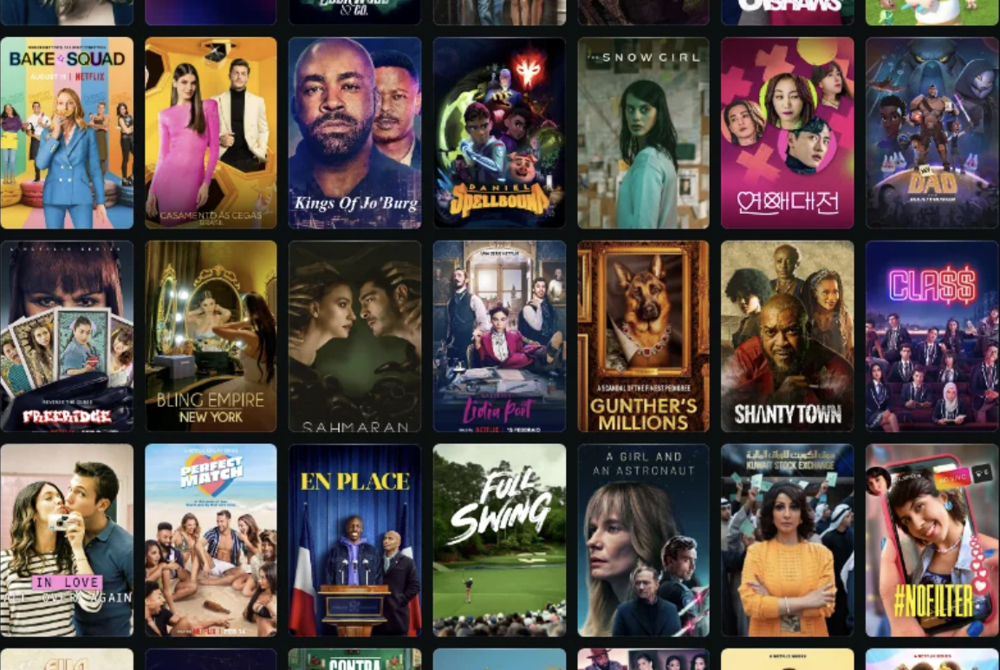
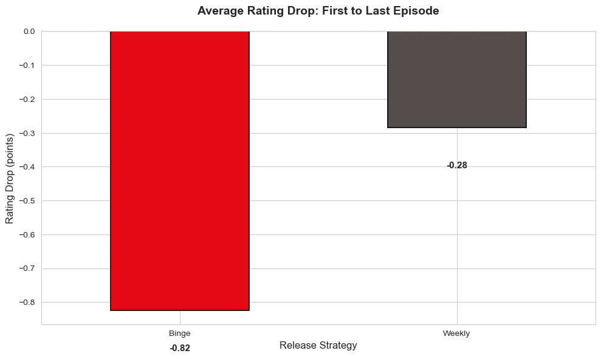
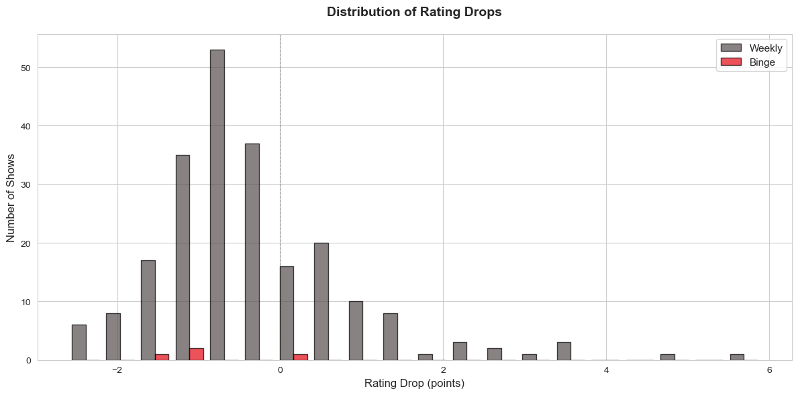
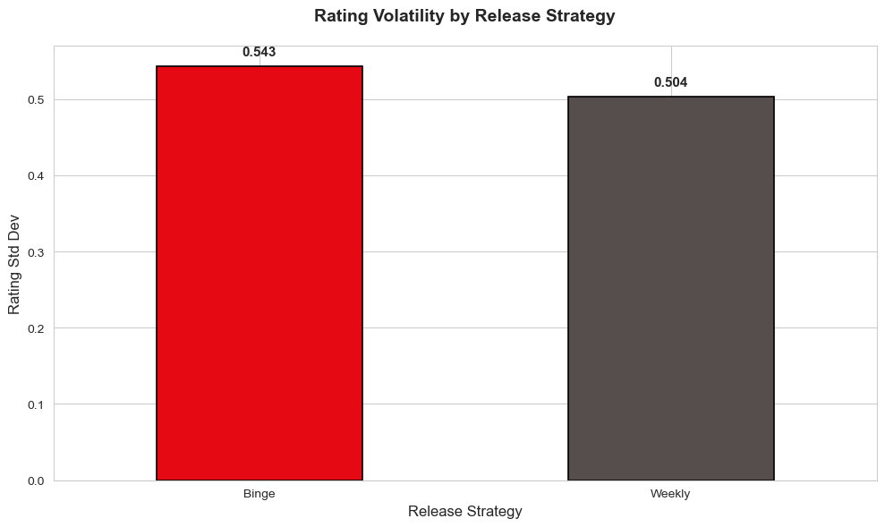
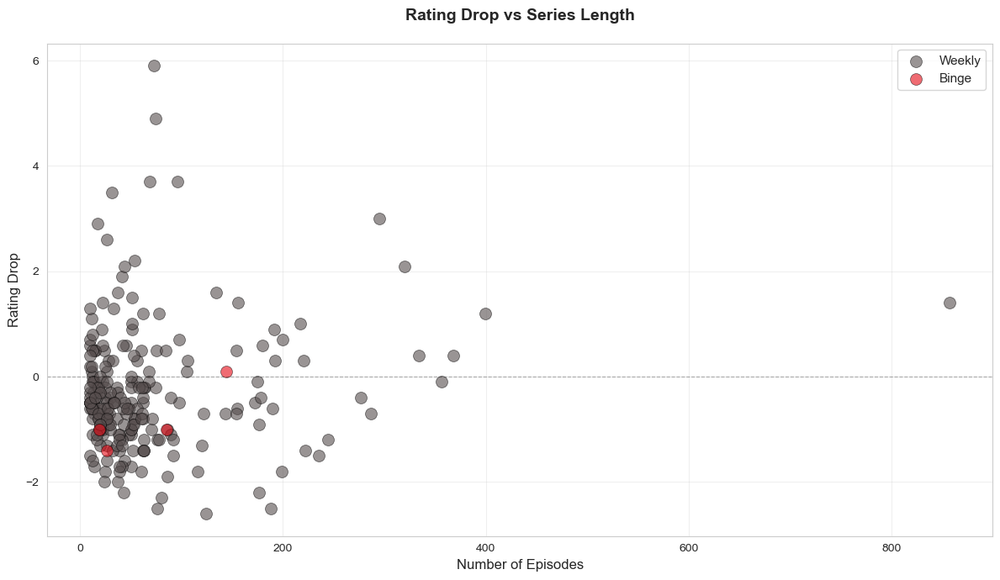

A statistical analysis of 15,866 episodes across 250 TV series, comparing binge vs weekly release strategies to uncover patterns in viewer engagement and quality perception.
Streaming platforms face a critical strategic decision: release all episodes at once (binge) or weekly? This analysis investigates how these release strategies impact viewer perception by analyzing episode-level ratings from IMDb's Top 250 TV Series.

Binge shows drop 2.9x more in ratings

Weekly releases cluster around zero (consistent quality)

Binge shows have higher rating volatility

Longer series show more rating decline
Data Collection: Used IMDb's Top 250 TV Series dataset from Kaggle containing episode-level ratings.
Classification: Shows were classified as "Binge" (streaming originals released all at once) or "Weekly" (traditional broadcast/cable) based on their primary release strategy.
Analysis Steps:
Limitations:
For Streaming Platforms:
For Content Creators:
Future Analysis:
This analysis provides data-driven insights into the effectiveness of different content release strategies. The findings suggest that while binge releases offer convenience, weekly releases may better maintain viewer engagement and quality perception over time. These insights can help streaming platforms make more informed decisions about release strategies based on content type, series length, and business objectives.
Skills Demonstrated: Statistical Analysis, Hypothesis Testing, Data Visualization, Python Programming, Business Insight Translation